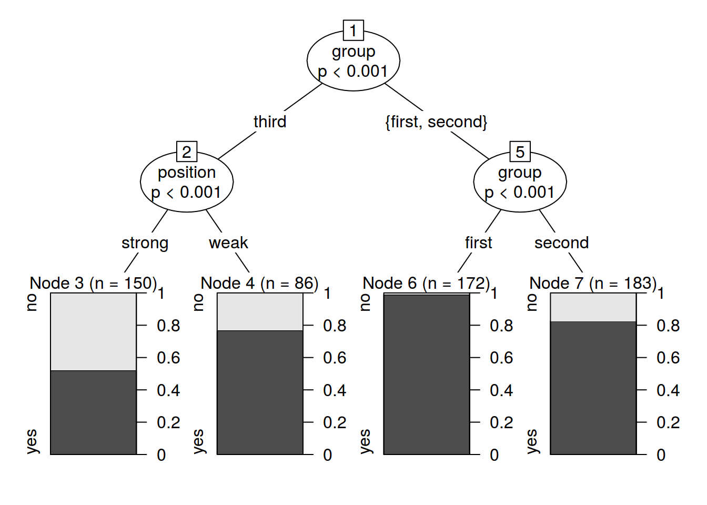
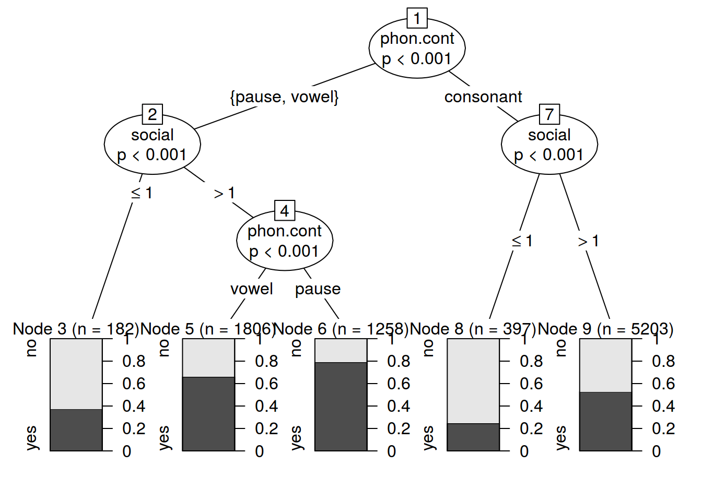
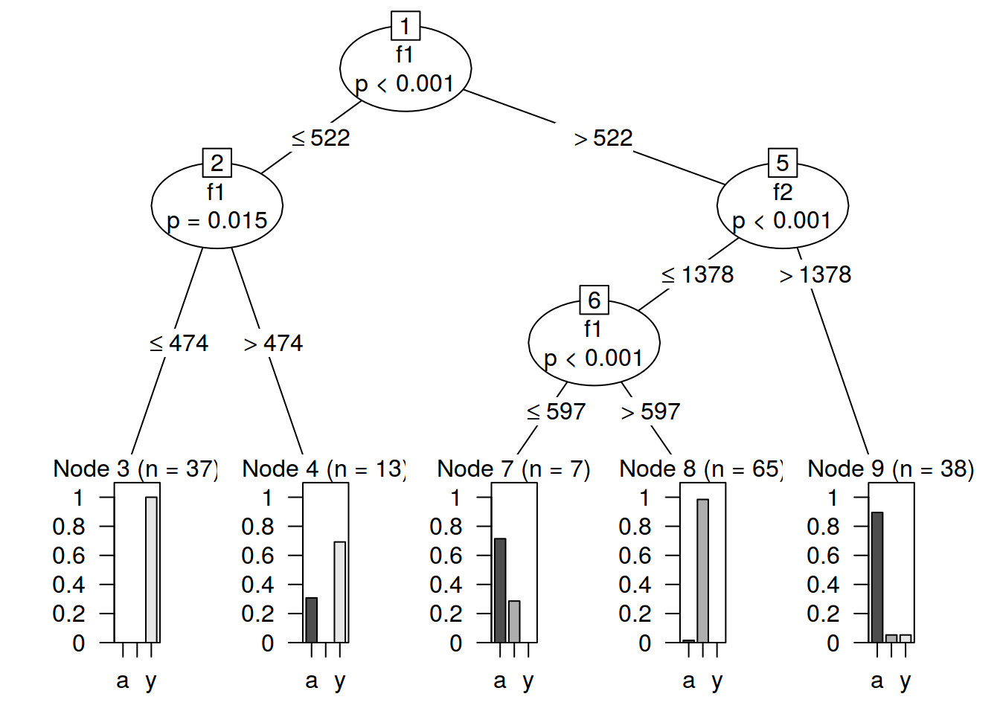

Decision Trees and Forests
Assignment link
library(party)1.
df <- read.csv("http://goo.gl/aE3yVg")
fit <- ctree(v.elision~., data = df)
plot(fit)
print(fit)##
## Conditional inference tree with 4 terminal nodes
##
## Response: v.elision
## Inputs: group, word, position
## Number of observations: 591
##
## 1) group == {third}; criterion = 1, statistic = 87.011
## 2) position == {strong}; criterion = 0.999, statistic = 14.01
## 3)* weights = 150
## 2) position == {weak}
## 4)* weights = 86
## 1) group == {first, second}
## 5) group == {first}; criterion = 1, statistic = 27.204
## 6)* weights = 172
## 5) group == {second}
## 7)* weights = 183predict(fit, df[45,-1], response = TRUE)## [1] yes
## Levels: no yesfit2 <- cforest(v.elision~., data = df, controls=cforest_unbiased(ntree=1000, mtry=2))
predict(fit2, df[45,-1],OOB=TRUE)## [1] yes yes yes yes yes yes yes yes yes yes yes yes yes yes yes yes yes
## [18] yes yes yes yes yes yes yes yes yes yes yes yes no no no no no
## [35] no no no no no no no no no no no no no no no no no
## [52] no no no no no no no no no no no no no no no no no
## [69] no no no no no no no no no yes yes yes yes yes yes yes yes
## [86] yes yes yes yes yes yes yes yes yes yes yes yes yes yes yes yes yes
## [103] yes yes yes yes yes yes yes yes yes yes yes yes yes yes yes yes yes
## [120] yes yes yes yes yes yes yes yes yes yes yes yes yes yes yes yes yes
## [137] yes yes yes yes yes yes yes yes yes yes yes yes yes yes yes yes yes
## [154] yes yes yes yes yes yes yes yes yes yes yes yes yes yes yes yes yes
## [171] yes yes yes yes yes yes yes yes yes yes yes yes yes yes yes yes yes
## [188] yes yes yes yes yes yes yes yes yes yes yes yes yes yes yes yes yes
## [205] yes yes yes yes yes yes yes yes yes yes yes yes yes yes yes yes yes
## [222] yes yes yes yes yes yes yes yes yes yes yes yes yes yes yes yes yes
## [239] yes yes yes yes yes yes yes yes yes yes yes yes yes yes yes yes yes
## [256] yes yes yes yes yes yes yes yes yes yes yes yes yes yes yes yes yes
## [273] yes yes yes yes yes yes yes yes yes yes yes yes yes yes yes yes yes
## [290] yes yes yes yes yes yes yes yes yes yes yes yes yes yes yes yes yes
## [307] yes yes yes yes yes yes yes yes yes yes yes no no no no no no
## [324] no no no no no no no no no no no no no no no no no
## [341] no no no no no no no no no no no yes yes yes yes yes yes
## [358] yes yes yes yes yes yes yes yes yes yes yes yes yes yes yes yes yes
## [375] yes yes yes yes yes yes yes yes yes yes yes yes yes yes yes yes yes
## [392] yes yes yes yes yes yes yes yes yes yes yes yes yes yes yes yes yes
## [409] yes yes yes yes yes yes yes yes yes yes yes yes yes yes yes yes yes
## [426] yes yes yes yes yes yes yes yes yes yes yes yes yes yes yes yes yes
## [443] yes yes yes yes yes yes yes yes yes yes yes yes yes yes yes yes yes
## [460] yes yes yes yes yes yes yes yes yes yes yes yes yes yes yes yes yes
## [477] yes yes yes yes yes yes yes yes yes yes yes yes yes yes yes yes yes
## [494] yes yes yes yes yes yes yes yes yes yes yes yes yes yes yes yes yes
## [511] yes yes yes yes yes yes yes yes yes yes yes yes yes yes yes yes yes
## [528] yes yes yes yes yes yes yes yes yes yes yes yes yes yes yes yes yes
## [545] yes yes yes yes yes yes yes yes yes yes yes yes yes yes yes yes yes
## [562] yes yes yes yes yes yes yes yes yes yes yes yes yes yes yes yes yes
## [579] yes yes yes yes yes yes yes yes yes yes yes yes yes
## Levels: no yesvarimp(fit2)## group word position
## 0.05086636 0.01590783 0.021852532.
df <- read.csv("https://goo.gl/F9m4O2")
fit <- ctree(s.deletion~phon.cont+social, data = df)
plot(fit)
print(fit)##
## Conditional inference tree with 5 terminal nodes
##
## Response: s.deletion
## Inputs: phon.cont, social
## Number of observations: 8846
##
## 1) phon.cont == {pause, vowel}; criterion = 1, statistic = 344.156
## 2) social <= 1; criterion = 1, statistic = 92.762
## 3)* weights = 182
## 2) social > 1
## 4) phon.cont == {vowel}; criterion = 1, statistic = 61.559
## 5)* weights = 1806
## 4) phon.cont == {pause}
## 6)* weights = 1258
## 1) phon.cont == {consonant}
## 7) social <= 1; criterion = 1, statistic = 118.054
## 8)* weights = 397
## 7) social > 1
## 9)* weights = 5203predict(fit, df[1,-c(1:2)], response = TRUE)## [1] no
## Levels: no yesfit2 <- cforest(s.deletion~phon.cont+social, data = df, controls=cforest_unbiased(ntree=100, mtry=2))
varimp(fit2)## phon.cont social
## 0.00000000 0.037192013.
shva <- read.csv("https://raw.githubusercontent.com/agricolamz/2018-MAG_R_course/master/data/duryagin_ReductionRussian.txt", sep = "\t")
fit <- ctree(vowel~f1+f2, data = shva)
plot(fit)
print(fit)##
## Conditional inference tree with 5 terminal nodes
##
## Response: vowel
## Inputs: f1, f2
## Number of observations: 160
##
## 1) f1 <= 522; criterion = 1, statistic = 127.646
## 2) f1 <= 474; criterion = 0.985, statistic = 7.134
## 3)* weights = 37
## 2) f1 > 474
## 4)* weights = 13
## 1) f1 > 522
## 5) f2 <= 1378; criterion = 1, statistic = 66.584
## 6) f1 <= 597; criterion = 1, statistic = 21.42
## 7)* weights = 7
## 6) f1 > 597
## 8)* weights = 65
## 5) f2 > 1378
## 9)* weights = 38predict(fit, newdata = data.frame(f1 = as.integer(600),
f2 = as.integer(1300)), response = TRUE)## [1] A
## Levels: a A yfit2 <- cforest(vowel~f1+f2, data = shva, controls=cforest_unbiased(ntree=100, mtry=2))
varimp(fit2)## f1 f2
## 0.4462069 0.1124138predict(fit2, newdata = data.frame(f1 = as.integer(600),
f2 = as.integer(1300)),OOB=TRUE)## [1] A
## Levels: a A y